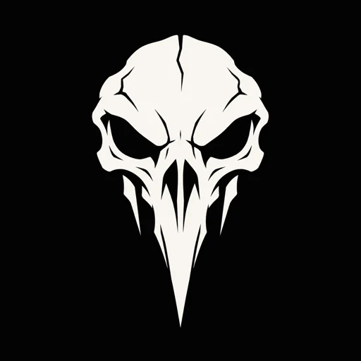
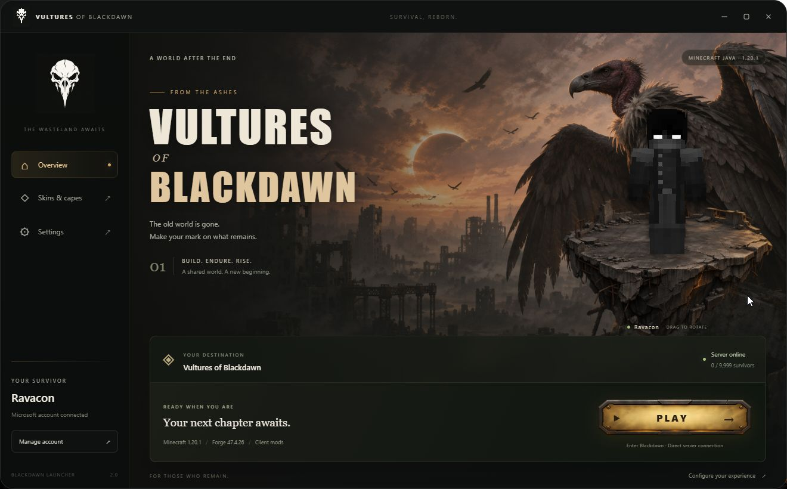

One launch. All together.
Forge and your client mods are installed and verified together. Start the game and head straight into Blackdawn.

VULTURESOF BLACKDAWN Get the launcherA NEW DAWN. A DIFFERENT WORLD.
Welcome to Vultures of Blackdawn.
Your next chapter starts at the edge of the wasteland.
01 / THE EXPERIENCE
The atmosphere starts before you enter the game. From the first launch to the loading screen, Blackdawn carries one unmistakable identity.
The launcher brings Minecraft, Forge, and the client mods together, then takes you straight into the server. Less setup. More time in the world.
Meet your launcher02 / YOUR BASE OF OPERATIONS
A dedicated launcher.
Made to feel like part of the world.

THE BLACKDAWN LAUNCHER CAPTURED IN THE LAUNCHER.
Forge and your client mods are installed and verified together. Start the game and head straight into Blackdawn.
Manage your skin and available capes, preview your look in 3D, and sign in with your Microsoft account.
Adjust RAM allocation, resolution, and launcher behavior. Keep the settings you need within easy reach.
03 / STEP INTO BLACKDAWN
Get the launcher. Sign in. Make your entrance.
Download for WindowsThe public download will be available with our first GitHub release.
Download the Windows installer and follow the setup.
Use your Microsoft account and let the launcher prepare the game.
Press Play. Forge, mods, and the server connection are ready to go.
BEFORE YOU LAND
Yes. You need a Microsoft account that owns Minecraft: Java Edition. Sign in through the launcher to play.
No. The launcher includes the Forge installer and prepares Minecraft 1.20.1, Forge 47.4.26, and the bundled client mods together. An internet connection is required to download game files and join the server.
Yes. Launcher settings let you adjust memory allocation and resolution. Sign in to manage your skin and the capes available on your account.
The current installer is for 64-bit Windows. Minecraft runs using Java 17, which the launcher checks during setup.